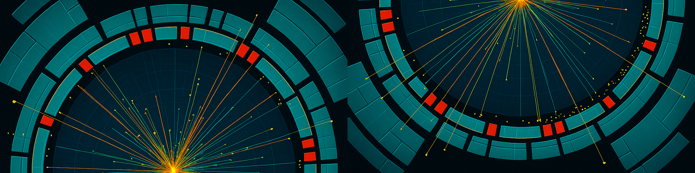

Abrebocas: Colisiones de Partículas en el CERN y su Detección en ATLAS
Explorando el corazón de la materia y las fuerzas que nos rigen.

El Centro Europeo de Investigación Nuclear (CERN), ubicado en la frontera franco-suiza, es el laboratorio de física de partículas más grande y prestigioso del mundo. Aquí, científicos e ingenieros de todas partes del mundo colaboran en una búsqueda incansable por comprender los componentes fundamentales de la materia y las fuerzas que rigen el universo. Una de las herramientas más potentes en esta búsqueda son las colisiones de partículas de alta energía, y uno de los principales instrumentos para observar estas colisiones es el detector ATLAS.
La aceleración de las Partículas en el LHC
El corazón de las investigaciones del CERN es el Gran Colisionador de Hadrones (LHC), un anillo de 27 kilómetros de circunferencia enterrado a 100 metros bajo tierra. Dentro de este gigantesco acelerador, miles de millones de protones son acelerados a velocidades cercanas a la de la luz, girando en direcciones opuestas (en dos tubos, un tubo para moverse hacia la derecha y otro hacia la izquierda). Estos protones los enpaquetan, cada paquete contiene aproximadamente 100 mil millones de protones. Por medio de campos magnéticos, con dipolos y cuadripolos, hace que esos paquetes de protones se estrechen, (estén lo más comprimidos posibles), es decir, sean enfocados para colisionar frontalmente en puntos específicos del anillo. Principalmente, en los 4 detectores principales del LHC; LHCb (Large Hadron Collider Beauty), que estudia las partículas que contienen quarks pesados; ALICE (A Large Ion Collider Experiment), el cual se centra en el estudio del plasma de quarks y gluones; CMS (Compact Muon Solenoid), detector multiproposito al igual que el ATLAS (A Toroidal LHC ApparatuS).
Estas colisiones buscan recrear las condiciones que existieron fracciones de segundo después del Big Bang. Decimos que cuando dos protones colisionan, en realidad lo que ocurre es que los constituyentes de los protones interactúam, pensando en un protón como un ejábre de partones (partes del protón como los quarks, los gluones y los pares quark-antiquark virtuales) con fracciones variables del momento. Debido a su energía, estas interacciones pueden crear pares de quarks pesados (top, bottom) o bosones $W$, $Z$, $Higgs$, porque la energía disposible se convierte en masa, y ahí es donde entra la famosa ecuación de Einstein $$E=mc^2.$$ De estas "nuevas" partículas, algunas son muy masivas y de muy corta vida, y solo pueden ser creadas bajo estas condiciones extremas. Estas partículas efímeras se desintegran casi instantáneamente en otras partículas más estables, dejando un rastro de "huellas" que podemos estudiar.
El Detector ATLAS
Para "ver" lo que sucede en estas colisiones, el CERN cuenta con varios detectores gigantes construidos alrededor de los puntos de colisión del LHC. Uno de los más grandes y sofisticados es el ATLAS (A Toroidal LHC ApparatuS). Con sus 46 metros de largo, 25 metros de diámetro y un peso de unas 7.000 toneladas, ATLAS es una obra maestra de la ingeniería y la física experimental.
El diseño de ATLAS es estratificado, con múltiples capas de detectores, cada una diseñada para identificar y medir diferentes propiedades de las partículas producidas en las colisiones. Imagínese una cebolla gigantesca, donde cada capa tiene una función específica:
- Sistema de imanes: ATLAS cuenta con un solenoide central que genera un fuerte campo magnético axial alrededor del detector interno. Este campo magnético, junto con grandes imanes toroidales ubicados en la región del espectrómetro de muones, curva la trayectoria de las partículas cargadas que emergen de la colisión. La dirección y el grado de curvatura permiten determinar el signo de la carga eléctrica de la partícula y medir su momento (cantidad de movimiento). Las partículas con mayor momento se curvan menos, mientras que las de menor momento experimentan una curvatura más pronunciada. Esta información es fundamental para identificar el tipo de partícula y reconstruir la cinemática del evento.
- Detector Interno (Inner Detector): Es la capa más cercana al punto de colisión. Su función principal es trazar las trayectorias de las partículas cargadas. Al medir la curvatura de estas trayectorias en un campo magnético, podemos determinar el momento (cantidad de movimiento) de las partículas. Aquí es donde se "ve" el nacimiento de las partículas.
- Calorímetros: Rodeando el detector interno, los calorímetros absorben la energía de las partículas. El Calorímetro Electromagnético mide la energía de electrones y fotones, mientras que el Calorímetro Hadrónico mide la energía de hadrones, partículas compuestas por quarks y gluones. Cuanta más energía deposita una partícula en el calorímetro, más grande es la señal que produce.
- Espectrómetro de Muones: Es la capa más externa y voluminosa de ATLAS. Los muones son partículas cargadas que, a diferencia de otras, pueden atravesar la mayoría de los materiales del detector sin ser absorbidas. El espectrómetro de muones utiliza grandes imanes toroidales para desviar los muones y medir su momento con alta precisión, permitiendo su identificación incluso después de haber viajado a través de las capas internas.
- Sistema de trigger: En cada punto de colisión del LHC, ocurren millones de interacciones por segundo. Guardar los datos de cada una de ellas sería tecnológicamente imposible y, en gran medida, innecesario, ya que la mayoría corresponden a procesos bien conocidos. Aquí entra en juego el sistema de trigger (disparador). Este complejo sistema electrónico y de software analiza en tiempo real una pequeña fracción de la información de los detectores para identificar aquellos eventos que tienen el potencial de ser interesantes para la física. El trigger opera en varios niveles, con criterios cada vez más estrictos, reduciendo drásticamente la tasa de eventos que se guardan para un análisis posterior. Es como un filtro inteligente que prioriza los "destellos" más brillantes de cada colisión.
- Adquisición de Datos: Una vez que un evento pasa el sistema de trigger, la información completa de todos los subsistemas del detector se recopila y se envía a un enorme sistema de almacenamiento y procesamiento de datos. La cantidad de datos generada por ATLAS es inmensa, del orden de petabytes por año. Estos datos son distribuidos a centros de investigación de todo el mundo a través de la GRID, una infraestructura computacional distribuida que permite analizar los eventos y buscar nuevas partículas y fenómenos. Rodeando el detector, hay un conjunto de imanes que genera ca
¿Cómo se Detectan las Partículas? El Principio Básico
La detección de partículas en ATLAS se basa en la interacción de estas con la materia de los detectores. Cuando una partícula cargada o un fotón atraviesa un material, deja una "firma" detectable. Esto puede ser en forma de ionización (arrancando electrones de los átomos), excitación de átomos (emitiendo luz al volver a su estado fundamental) o producción de nuevas partículas secundarias.
Los detectores están equipados con sofisticados sistemas electrónicos que convierten estas interacciones físicas en señales eléctricas. Estas señales son amplificadas, digitalizadas y enviadas a sistemas informáticos para su procesamiento y análisis. Millones de colisiones ocurren cada segundo, y cada una genera una enorme cantidad de datos. Algoritmos complejos son esenciales para filtrar el "ruido" y reconstruir los eventos de colisión, identificando las partículas producidas y sus propiedades.
El Legado de ATLAS: De la Búsqueda del Bosón de Higgs a Nuevos Descubrimientos
ATLAS ha sido instrumental en algunos de los descubrimientos más trascendentales de la física de partículas en las últimas décadas. Su logro más célebre, junto con el detector CMS, fue el descubrimiento del Bosón de Higgs en 2012, la partícula que da masa a otras partículas elementales, completando el Modelo Estándar de la física de partículas.
Pero la misión de ATLAS no termina ahí. Continúa operando, recopilando datos de colisiones a energías cada vez más altas y con mayor luminosidad (más colisiones por segundo). La colaboración de ATLAS están buscando activamente:
- Nueva Física más allá del Modelo Estándar: El Modelo Estándar, aunque exitoso, no explica fenómenos como la materia oscura, la energía oscura o la gravedad. ATLAS busca indicios de partículas o interacciones no previstas por este modelo.
- Partículas Exóticas: Posibles partículas con propiedades inusuales que podrían abrir nuevas ventanas a la comprensión del universo.
- Propiedades Precisas del Bosón de Higgs: Medir con mayor precisión las propiedades del Bosón de Higgs para entender mejor su papel fundamental.
¿Te gustó este artículo? Compártelo o si tienes dudas, escríbeme.